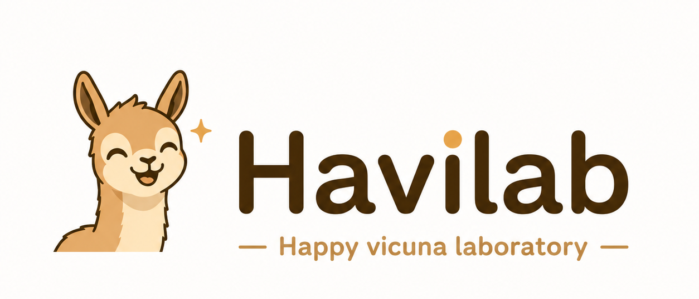

vla.cpp
The open-source project I'm P.I.C of at VinRobotics - bringing Vision-Language-Action models to local hardware, in the spirit of llama.cpp for robotics.
View on GitHub ↗Havilab
I'm Dang-Khanh Nguyen - a software engineer working on edge AI deployment, model optimization, and robotics with VLMs, VLAs, and LLMs. Happy vicuna laboratory is inspired by llama.cpp: small lines of code that bring big things to your own hardware.

I build and ship software where deep learning meets real hardware. These days that means designing SDKs for computer-vision models, optimizing neural networks for AI accelerators, and decomposing operations so they run fast and in parallel - getting capable models onto edge devices and robots.
My background spans research and low-level engineering: video emotion recognition and multimodal learning during my Master's, plus years writing C/C++ for virtual MCUs and network protocols. I like simple lines of code that are effective - the philosophy I admire in Andrej Karpathy and in projects like llama.cpp.
A few things I'm proud of - small in code, big in scope.
The open-source project I'm P.I.C of at VinRobotics - bringing Vision-Language-Action models to local hardware, in the spirit of llama.cpp for robotics.
View on GitHub ↗Neural network Representation EXchange - a hands-on study of how different frameworks represent and serialize neural networks.
View on GitHub ↗Multiple Appropriate Facial Reaction Generation - synthesizing diverse listener reactions from a speaker's audio-visual cues. 3rd place at REACT 2024.
View on GitHub ↗An C++ inference engine to run VLA on CPU; no ggml, no CUDA, no GPU. Just AVX2 and OpenMP. A simple and effective way to run VLA on CPU.
View on GitHub ↗Always happy to talk edge AI, optimization, and robotics.